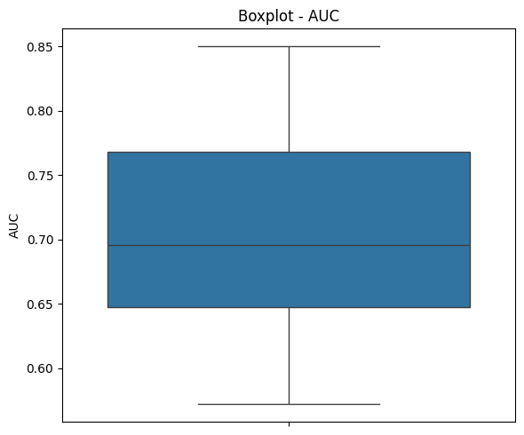
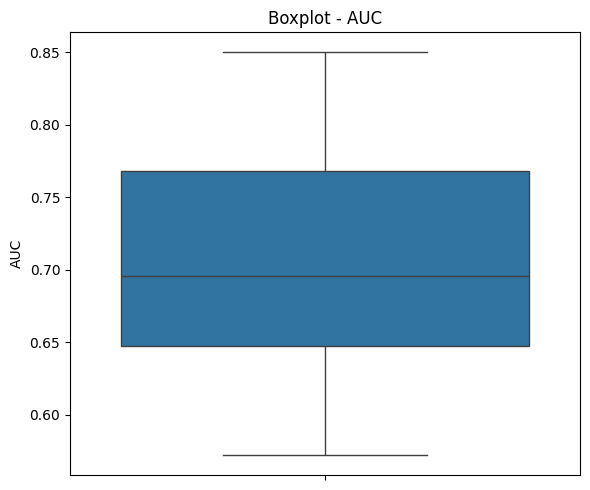
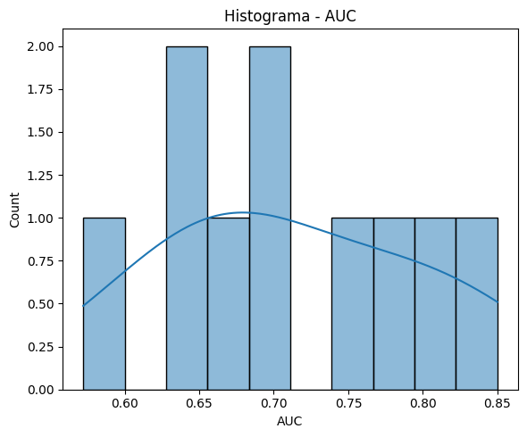
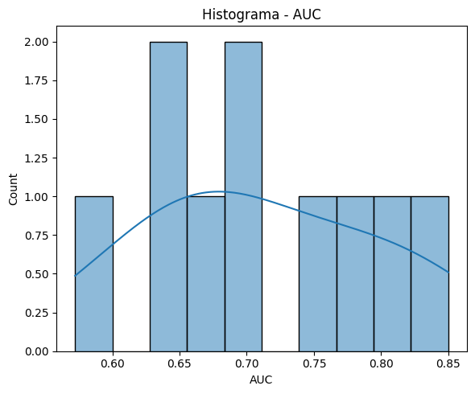

Ejercicio 4. Modelos de Segmentación#
# !pip install segmentation_models segmentation_models_pytorch timm monai medpy torchmetrics albumentations imagecodecs einops
import os, json, random
from PIL import Image
import itertools, warnings, math, gc, pandas, numpy, time
import numpy as np, pandas as pd, tensorflow as tf, cv2, matplotlib.pyplot as plt, seaborn as sns
from sklearn.model_selection import StratifiedKFold
from sklearn.metrics import roc_auc_score, precision_recall_curve, roc_curve, auc, balanced_accuracy_score, confusion_matrix
import torch, tifffile as tiff
from torch import nn, optim
from torch.utils.data import Dataset, DataLoader
from torchvision.transforms import functional as TF
from torchvision.models.detection import maskrcnn_resnet50_fpn
import segmentation_models_pytorch as smp, timm, monai
from sklearn.model_selection import KFold
from sklearn.metrics import roc_auc_score, balanced_accuracy_score, precision_score, recall_score
from scipy.spatial.distance import directed_hausdorff
from medpy.metric.binary import hd95
from skimage.draw import polygon
import torch.multiprocessing as mp
torch.backends.cudnn.benchmark = True
device = torch.device("cuda" if torch.cuda.is_available() else "cpu")
random.seed(0); np.random.seed(0); torch.manual_seed(0)
mp.set_start_method("spawn", force=True)
device
Punto 4#
Parte A#
meta_tiles = pd.read_csv('tile_meta.csv')
meta_wsi = pd.read_csv('wsi_meta.csv')
with open('polygons.jsonl') as f:
anotaciones = [json.loads(l) for l in f]
df_anot = pd.json_normalize(anotaciones, 'annotations', ['id'])
df_anot['area_px'] = df_anot['coordinates'].apply(lambda ls: sum(cv2.contourArea(np.array(p, np.int32)) for p in ls))
df_anot
| type | coordinates | id | area_px | |
|---|---|---|---|---|
| 0 | glomerulus | [[[167, 249], [166, 249], [165, 249], [164, 24... | 0006ff2aa7cd | 55942.5 |
| 1 | blood_vessel | [[[283, 109], [282, 109], [281, 109], [280, 10... | 0006ff2aa7cd | 521.0 |
| 2 | blood_vessel | [[[104, 292], [103, 292], [102, 292], [101, 29... | 0006ff2aa7cd | 939.5 |
| 3 | blood_vessel | [[[505, 442], [504, 442], [503, 442], [502, 44... | 0006ff2aa7cd | 928.5 |
| 4 | blood_vessel | [[[375, 477], [374, 477], [373, 477], [372, 47... | 0006ff2aa7cd | 963.5 |
| ... | ... | ... | ... | ... |
| 17513 | blood_vessel | [[[184, 308], [183, 308], [182, 308], [181, 30... | ffd3d193c71e | 360.0 |
| 17514 | blood_vessel | [[[42, 92], [41, 92], [40, 92], [39, 92], [38,... | ffd3d193c71e | 661.0 |
| 17515 | blood_vessel | [[[287, 480], [286, 480], [285, 480], [284, 48... | ffd3d193c71e | 342.5 |
| 17516 | blood_vessel | [[[493, 388], [492, 388], [491, 388], [490, 38... | ffd3d193c71e | 1643.5 |
| 17517 | blood_vessel | [[[64, 15], [63, 15], [62, 15], [61, 15], [61,... | ffd3d193c71e | 158.5 |
17518 rows × 4 columns
meta_tiles
| id | source_wsi | dataset | i | j | |
|---|---|---|---|---|---|
| 0 | 0006ff2aa7cd | 2 | 2 | 16896 | 16420 |
| 1 | 000e79e206b7 | 6 | 3 | 10240 | 29184 |
| 2 | 00168d1b7522 | 2 | 2 | 14848 | 14884 |
| 3 | 00176a88fdb0 | 7 | 3 | 14848 | 25088 |
| 4 | 0033bbc76b6b | 1 | 1 | 10240 | 43008 |
| ... | ... | ... | ... | ... | ... |
| 7028 | ffd37b5c6598 | 13 | 3 | 13824 | 21504 |
| 7029 | ffd3d193c71e | 3 | 2 | 7680 | 16896 |
| 7030 | ffd77e2517af | 13 | 3 | 15872 | 28160 |
| 7031 | ffe3cbb81f72 | 10 | 3 | 15456 | 23000 |
| 7032 | ffe40e3bc324 | 9 | 3 | 13824 | 19456 |
7033 rows × 5 columns
meta_wsi
| source_wsi | age | sex | race | height | weight | bmi | |
|---|---|---|---|---|---|---|---|
| 0 | 1 | 58 | F | W | 160.0 | 59.0 | 23.0 |
| 1 | 2 | 56 | F | W | 175.2 | 139.6 | 45.5 |
| 2 | 3 | 73 | F | W | 162.3 | 87.5 | 33.2 |
| 3 | 4 | 53 | M | B | 166.0 | 73.0 | 26.5 |
df_anot_agr = df_anot.groupby(['id', 'type'])['area_px'].sum().unstack(fill_value=0).reset_index()
df_anot_agr
| type | id | blood_vessel | glomerulus | unsure |
|---|---|---|---|---|
| 0 | 0006ff2aa7cd | 10051.0 | 55942.5 | 0.0 |
| 1 | 00168d1b7522 | 1557.5 | 20416.0 | 0.0 |
| 2 | 0033bbc76b6b | 2891.0 | 0.0 | 2619.0 |
| 3 | 003504460b3a | 1969.5 | 0.0 | 0.0 |
| 4 | 004daf1cbe75 | 4886.5 | 37870.5 | 0.0 |
| ... | ... | ... | ... | ... |
| 1628 | ff434af74304 | 5495.5 | 0.0 | 0.0 |
| 1629 | ff4897b3eda6 | 7093.5 | 0.0 | 0.0 |
| 1630 | ff66dec71c4c | 21842.0 | 2035.0 | 0.0 |
| 1631 | ff99cdef0f2a | 3630.5 | 3017.5 | 0.0 |
| 1632 | ffd3d193c71e | 3165.5 | 141444.0 | 0.0 |
1633 rows × 4 columns
print('Estadísticas globales')
print('Total tiles', len(meta_tiles))
print('Total WSIs', meta_tiles['source_wsi'].nunique())
meta_tiles['dataset'].value_counts()
Estadísticas globales
Total tiles 7033
Total WSIs 13
dataset
3 5400
2 1211
1 422
Name: count, dtype: int64
meta_tiles[['i', 'j']].describe()
| i | j | |
|---|---|---|
| count | 7033.000000 | 7033.000000 |
| mean | 14296.542585 | 23227.014930 |
| std | 5946.054578 | 10644.032931 |
| min | 1536.000000 | 2560.000000 |
| 25% | 9728.000000 | 15265.000000 |
| 50% | 13824.000000 | 22528.000000 |
| 75% | 18944.000000 | 29656.000000 |
| max | 30208.000000 | 52753.000000 |
print('Distribución de anotaciones por tipo')
df_anot['type'].value_counts()
Distribución de anotaciones por tipo
type
blood_vessel 16054
unsure 897
glomerulus 567
Name: count, dtype: int64
print('Cobertura promedio de máscara por tile')
df_anot_agr[['blood_vessel', 'glomerulus', 'unsure']].mean() / (512 * 512)
Cobertura promedio de máscara por tile
type
blood_vessel 0.043463
glomerulus 0.045918
unsure 0.004662
dtype: float64
sin_mask = set(meta_tiles['id']) - set(df_anot['id'])
print('Tiles sin máscara', len(sin_mask))
Tiles sin máscara 5400
df_anot_agr['ratio_bv'] = df_anot_agr['blood_vessel'] / (512 * 512)
an_bajas = df_anot_agr.query('ratio_bv < 0.0005 and ratio_bv > 0')
an_altas = df_anot_agr.query('ratio_bv > 0.9')
df_anot_agr
| type | id | blood_vessel | glomerulus | unsure | ratio_bv |
|---|---|---|---|---|---|
| 0 | 0006ff2aa7cd | 10051.0 | 55942.5 | 0.0 | 0.038342 |
| 1 | 00168d1b7522 | 1557.5 | 20416.0 | 0.0 | 0.005941 |
| 2 | 0033bbc76b6b | 2891.0 | 0.0 | 2619.0 | 0.011028 |
| 3 | 003504460b3a | 1969.5 | 0.0 | 0.0 | 0.007513 |
| 4 | 004daf1cbe75 | 4886.5 | 37870.5 | 0.0 | 0.018641 |
| ... | ... | ... | ... | ... | ... |
| 1628 | ff434af74304 | 5495.5 | 0.0 | 0.0 | 0.020964 |
| 1629 | ff4897b3eda6 | 7093.5 | 0.0 | 0.0 | 0.027060 |
| 1630 | ff66dec71c4c | 21842.0 | 2035.0 | 0.0 | 0.083321 |
| 1631 | ff99cdef0f2a | 3630.5 | 3017.5 | 0.0 | 0.013849 |
| 1632 | ffd3d193c71e | 3165.5 | 141444.0 | 0.0 | 0.012075 |
1633 rows × 5 columns
an_bajas
| type | id | blood_vessel | glomerulus | unsure | ratio_bv |
|---|---|---|---|---|---|
| 1139 | b3ee5e7bcf74 | 85.5 | 0.0 | 0.0 | 0.000326 |
| 1232 | c35d853b0cd2 | 93.5 | 0.0 | 0.0 | 0.000357 |
an_altas
| type | id | blood_vessel | glomerulus | unsure | ratio_bv |
|---|
print('Posibles anomalías baja cobertura', len(an_bajas))
print('Posibles anomalías alta cobertura', len(an_altas))
Posibles anomalías baja cobertura 2
Posibles anomalías alta cobertura 0
def cargar_imagen(tile_id):
return Image.open(f"train/{tile_id}.tif")
def generar_mascara(lista_poligonos):
mask = np.zeros((512, 512), dtype=np.uint8)
for poly in lista_poligonos:
pts = np.array(poly, np.int32)
cv2.fillPoly(mask, [pts], 1)
return mask
def mostrar_ejemplo(tile_id):
img = cargar_imagen(tile_id)
sub = df_anot[df_anot['id'] == tile_id]
mask_total = np.zeros((512, 512), dtype=np.uint8)
for _, fila in sub.iterrows():
mask_total |= generar_mascara(fila['coordinates'])
fig, ax = plt.subplots(1, 2)
ax[0].imshow(img)
ax[0].set_title(f'Imagen {tile_id}')
ax[1].imshow(img)
ax[1].imshow(mask_total, alpha=0.7, cmap='Reds')
ax[1].set_title('Máscara')
for a in ax:
a.axis('off')
plt.tight_layout()
plt.show()
muestras = random.sample(list(df_anot_agr['id']), min(9, len(meta_tiles)))
for tid in muestras:
mostrar_ejemplo(tid)

Parte B#
meta_tiles = pd.read_csv("tile_meta.csv")
with open("polygons.jsonl") as f:
anotaciones = {json.loads(l)["id"]:json.loads(l)["annotations"] for l in f}
ids_anotados = [tid for tid in meta_tiles.id.tolist() if tid in anotaciones]
kfold = KFold(n_splits=2, shuffle=True, random_state=0)
class HuBMAP(Dataset):
def __init__(self, ids, aug=False, gris=False):
self.ids = ids; self.aug = aug; self.gris = gris
def __len__(self): return len(self.ids)
def _mask(self, tid):
if tid not in anotaciones:
return np.zeros((512,512), np.uint8)
m = np.zeros((512,512), np.uint8)
for a in anotaciones[tid]:
pts = np.array(a["coordinates"][0])
rr, cc = polygon(pts[:,1], pts[:,0])
if a["type"] == "blood_vessel":
m[rr, cc] = 1
elif a["type"] == "glomerulus":
m[rr, cc] = 0
return m
def __getitem__(self, idx):
tid = self.ids[idx]
try:
img_path = f"train/{tid}.tif"
if not os.path.exists(img_path):
raise FileNotFoundError(img_path)
img = tiff.imread(img_path).astype(np.float32) / 255
if img.ndim == 2:
# img = np.repeat(img[..., None], 3, 2)
img = img[..., None]
elif self.gris: # convertir
img = img.mean(2, keepdims=True)
msk = self._mask(tid).astype(np.float32)
if self.aug and random.random() > 0.5:
img = np.flip(img, 1).copy()
msk = np.flip(msk, 1).copy()
img = torch.from_numpy(img).permute(2, 0, 1).contiguous()
msk = torch.from_numpy(msk).unsqueeze(0).contiguous()
return img, msk
except Exception as e:
print(f"Excepción en tile {tid}: {e}")
raise
def dice_loss(p,t):
p=torch.sigmoid(p); p=p.view(-1); t=t.view(-1)
inter=(p*t).sum(); return 1-(2*inter+1)/(p.sum()+t.sum()+1)
def entrenar_modelo(modelo, nombre, epocas=2, lote=4, gris=False):
inicio = time.time()
preds, truth = [], []
for f, (tr, vl) in enumerate(kfold.split(ids_anotados)):
print(f"Fold {f+1}")
dl_tr = DataLoader(HuBMAP(np.array(ids_anotados)[tr], aug=True, gris=gris),
batch_size=lote, shuffle=True,
num_workers=0, pin_memory=True, drop_last=True)
dl_vl = DataLoader(HuBMAP(np.array(ids_anotados)[vl], gris=gris),
batch_size=lote, shuffle=False,
num_workers=0, pin_memory=True)
modelo.to(device)
opt = optim.Adam(modelo.parameters(), 1e-3)
for e in range(epocas):
modelo.train(); ltr = []
for x, y in dl_tr:
x, y = x.to(device), y.to(device)
opt.zero_grad()
o = modelo(x)
l = dice_loss(o, y)
l.backward(); opt.step()
ltr.append(l.item())
print(f"Época {e+1} pérdida {np.mean(ltr):.4f}")
modelo.eval(); pl = []
with torch.no_grad():
for x, y in dl_vl:
x = x.to(device)
o = torch.sigmoid(modelo(x)).cpu().numpy()
pl.append(o); truth.append(y.numpy())
preds.append(np.concatenate(pl,0))
gc.collect(); torch.cuda.empty_cache()
np.savez(f"{nombre}_pred.npz", p=np.concatenate(preds,0),
t=np.concatenate(truth,0))
print(f"Tiempo total {time.time()-inicio:.1f}s")
def calcular_metricas(ruta):
d = np.load(ruta)
p = d["p"] # probabilidades (float32)
t = d["t"] # ground‑truth (float32)
# binarizamos
pb = (p >= 0.5).astype(np.uint8)
gt = (t >= 0.5).astype(np.uint8)
# planos 1‑D para métricas escalar‑escalares
pb_flat = pb.reshape(-1)
gt_flat = gt.reshape(-1)
inter = (pb & gt).sum()
union = (pb | gt).sum()
dice = 2 * inter / (pb.sum() + gt.sum() + 1e-7)
iou = inter / (union + 1e-7)
prec = precision_score(gt_flat, pb_flat, zero_division=0)
rec = recall_score(gt_flat, pb_flat, zero_division=0)
auc = roc_auc_score(gt_flat, p.reshape(-1))
# Hausdorff medio (ignora pares vacíos)
hds = []
for i in range(len(pb)):
a, b = pb[i,0], gt[i,0]
if a.sum() and b.sum():
hds.append(hd95(a, b))
hd = np.mean(hds) if hds else 0
bal = balanced_accuracy_score(gt_flat, pb_flat)
return dice, iou, prec, rec, auc, hd, bal
resultados={}
# unet = smp.Unet("resnet18", classes=1, encoder_weights=None, in_channels=3)
# entrenar_modelo(unet, "unet")
Fold 1
Época 1 pérdida 0.7357
Época 2 pérdida 0.5802
Fold 2
Época 1 pérdida 0.5490
Época 2 pérdida 0.5209
Tiempo total 2960.1s
# resultados["U-Net"]=calcular_metricas("unet_pred.npz")
# print(resultados["U-Net"])
resultados["U-Net"] = (0.3657676171209982, 0.223816160390012, 0.5818459552217784, 0.2667175449525134, 0.6976392639819838, 214.9718765130667, 0.6288454613023772)
# vnet = monai.networks.nets.VNet(
# spatial_dims=2, # 2‑D porque los tiles son 512×512
# in_channels=1,
# out_channels=1,
# act="relu"
# )
# entrenar_modelo(vnet,"vnet")
Fold 1
Época 1 pérdida 0.9191
Época 2 pérdida 0.9154
Fold 2
Época 1 pérdida 0.9092
Época 2 pérdida 0.9039
Tiempo total 5797.5s
# resultados["V_Net"]=calcular_metricas("vnet_pred.npz")
# print(resultados["V_Net"])
resultados["V_Net"] = (0.12536624099297586, 0.06687505780296049, 0.07091400658766504, 0.5400525739978579, 0.6305296480084055, 206.19146433752485, 0.6034261555389702)
# class SegNet(nn.Module):
# def __init__(self):
# super().__init__()
# self.encoder=nn.Sequential(
# nn.Conv2d(3,32,3,1,1),nn.BatchNorm2d(32),nn.ReLU(),nn.MaxPool2d(2),
# nn.Conv2d(32,64,3,1,1),nn.BatchNorm2d(64),nn.ReLU(),nn.MaxPool2d(2))
# self.decoder=nn.Sequential(
# nn.ConvTranspose2d(64,32,2,2),nn.BatchNorm2d(32),nn.ReLU(),
# nn.ConvTranspose2d(32,1,2,2))
# def forward(self,x): return self.decoder(self.encoder(x))
# segnet=SegNet()
# entrenar_modelo(segnet,"segnet")
Fold 1
Época 1 pérdida 0.8839
Época 2 pérdida 0.8024
Fold 2
Época 1 pérdida 0.7536
Época 2 pérdida 0.7436
Tiempo total 973.7s
# resultados["SegNet"]=calcular_metricas("segnet_pred.npz")
# print(resultados["SegNet"])
resultados["SegNet"] = (0.22675554542990525, 0.12787607757379385, 0.2369690363294747, 0.21738608988773034, 0.6405428333526553, 179.0008254925285, 0.5922115075397454)
# deeplab=smp.DeepLabV3Plus("resnet34",classes=1,encoder_weights=None,in_channels=3)
# entrenar_modelo(deeplab,"deeplab")
Fold 1
Época 1 pérdida 0.7330
Época 2 pérdida 0.5968
Fold 2
Época 1 pérdida 0.5733
Época 2 pérdida 0.5476
Tiempo total 3653.1s
# resultados["DeepLabV3+"]=calcular_metricas("deeplab_pred.npz")
# print(resultados["DeepLabV3+"])
resultados["DeepLabV3+"] = (0.14195539539967134, 0.07640042389090353, 0.08360187760641055, 0.4700399423804192, 0.6695391203753587, 182.82947204832968, 0.6137039010102096)
# att_unet=smp.Unet("resnet18",classes=1,encoder_weights=None,in_channels=3,decoder_attention_type="scse")
# entrenar_modelo(att_unet,"attention_unet")
Fold 1
Época 1 pérdida 0.6994
Época 2 pérdida 0.5708
Fold 2
Época 1 pérdida 0.5381
Época 2 pérdida 0.5229
Tiempo total 3646.5s
# resultados["Attention U-Net"]=calcular_metricas("attention_unet_pred.npz")
# print(resultados["Attention U-Net"])
resultados["Attention U-Net"] = (0.4190511078853865, 0.26506303269859705, 0.606627315675494, 0.320078973709521, 0.6933218467927132, 169.42644471092657, 0.6551523467114649)
# from skimage.measure import label, regionprops
# def colar(batch):
# imgs, tgts, gts = zip(*batch)
# return list(imgs), list(tgts), list(gts)
# class HuBMAPMaskRCNN(Dataset):
# def __init__(self, ids, aug=False):
# self.base = HuBMAP(ids, aug=aug, gris=False)
# def __len__(self): return len(self.base)
# def __getitem__(self, idx):
# img, sem = self.base[idx] # sem = (1,512,512) uint8
# m = sem.squeeze(0).numpy()
# inst = label(m, connectivity=1)
# props = regionprops(inst)
# if len(props)==0: # tile sin vasos
# target = {
# "boxes": torch.zeros((0,4), dtype=torch.float32),
# "labels": torch.zeros((0,), dtype=torch.int64),
# "masks": torch.zeros((0,512,512), dtype=torch.uint8),
# "image_id": torch.tensor([idx]),
# "area": torch.zeros((0,), dtype=torch.float32),
# "iscrowd": torch.zeros((0,), dtype=torch.int64),
# }
# return img, target, sem
# boxes, masks = [], []
# for p in props:
# y1,x1,y2,x2 = p.bbox
# boxes.append([x1,y1,x2,y2])
# masks.append((inst==p.label).astype(np.uint8))
# target = {
# "boxes": torch.as_tensor(boxes, dtype=torch.float32),
# "labels": torch.ones((len(boxes),), dtype=torch.int64),
# "masks": torch.as_tensor(masks, dtype=torch.uint8),
# "image_id": torch.tensor([idx]),
# "area": torch.as_tensor([(b[2]-b[0])*(b[3]-b[1]) for b in boxes], dtype=torch.float32),
# "iscrowd":torch.zeros((len(boxes),), dtype=torch.int64),
# }
# return img, target, sem
# def entrenar_maskrcnn(modelo, nombre, epocas=2, lote=2):
# inicio=time.time(); preds, truth = [], []
# for f,(tr,vl) in enumerate(kfold.split(ids_anotados)):
# print(f"[Mask] Fold {f+1}")
# dl_tr = DataLoader(
# HuBMAPMaskRCNN(np.array(ids_anotados)[tr], aug=True),
# batch_size=lote, shuffle=True, num_workers=0,
# pin_memory=True, drop_last=True, collate_fn=colar
# )
# dl_vl = DataLoader(
# HuBMAPMaskRCNN(np.array(ids_anotados)[vl]),
# batch_size=1, shuffle=False, num_workers=0,
# pin_memory=True, collate_fn=colar
# )
# modelo.to(device).train()
# opt = optim.Adam(modelo.parameters(), 1e-4)
# for e in range(epocas):
# ltr=[]
# for imgs, tgts, _ in dl_tr:
# imgs = [i.to(device) for i in imgs]
# tgts = [{k:(v.to(device) if torch.is_tensor(v) else v)
# for k,v in t.items()} for t in tgts]
# loss = sum(modelo(imgs, tgts).values())
# opt.zero_grad(); loss.backward(); opt.step()
# ltr.append(loss.item())
# print(f" Época {e+1} pérdida {np.mean(ltr):.4f}")
# modelo.eval(); pl=[]
# with torch.no_grad():
# for imgs, _, gts in dl_vl:
# out = modelo([imgs[0].to(device)])[0]
# mpred = torch.zeros_like(gts[0][0])
# keep = out["scores"] > 0.3
# for m in out["masks"][keep]:
# mpred = torch.maximum(mpred, (m[0]>0.5).cpu().to(torch.uint8))
# pl.append(mpred.numpy()); truth.append(gts[0].numpy())
# preds.append(np.stack(pl,0))
# gc.collect(); torch.cuda.empty_cache()
# np.savez(f"{nombre}_pred.npz", p=np.concatenate(preds,0),
# t=np.concatenate(truth,0))
# print(f"Tiempo total {time.time()-inicio:.1f}s")
# maskrcnn = maskrcnn_resnet50_fpn(weights=None, num_classes=2)
# entrenar_maskrcnn(maskrcnn, "maskrcnn")
Época 1 pérdida 1.4263
Época 2 pérdida 1.2548
[Mask] Fold 2
Época 1 pérdida 1.1962
Época 2 pérdida 1.1006
Tiempo total 21688.6s
# resultados["Mask R-CNN"]=calcular_metricas("maskrcnn_pred.npz")
# print(resultados["Mask R-CNN"])
resultados["Mask R-CNN"] = (0.4700875588981105, 0.30726435465779933, 0.35290892473696067, 0.7037623147102636, 0.8214972106265819, 141.30209424083768, 0.8214972106265819)
# resunet=smp.Unet("resnet18",classes=1,encoder_weights=None,in_channels=3)
# entrenar_modelo(resunet,"resunet")
Fold 1
Época 1 pérdida 0.7333
Época 2 pérdida 0.5781
Fold 2
Época 1 pérdida 0.5626
Época 2 pérdida 0.5336
Tiempo total 2984.7s
# resultados["ResUNet"]=calcular_metricas("resunet_pred.npz")
# print(resultados["ResUNet"])
resultados["ResUNet"] = (0.21392137692719543, 0.11977153422236302, 0.5997590162502497, 0.13017624791565846, 0.5722688012534252, 229.33932011038922, 0.5630426595288168)
# psp=smp.PSPNet("mobilenet_v2",classes=1,encoder_weights=None,in_channels=3)
# entrenar_modelo(psp,"pspnet")
Fold 1
Época 1 pérdida 0.6465
Época 2 pérdida 0.5530
Fold 2
Época 1 pérdida 0.5336
Época 2 pérdida 0.5074
Tiempo total 993.4s
# resultados["PSPNet"]=calcular_metricas("pspnet_pred.npz")
# print(resultados["PSPNet"])
resultados["PSPNet"] = (0.4400795696195428, 0.28211667790786576, 0.3947327118913157, 0.4971975822547149, 0.8499361504748153, 175.85728472086944, 0.7306477970888254)
# fcn=smp.FPN("mobilenet_v2",classes=1,encoder_weights=None,in_channels=3)
# entrenar_modelo(fcn,"fcn")
Fold 1
Época 1 pérdida 0.7297
Época 2 pérdida 0.6134
Fold 2
Época 1 pérdida 0.5754
Época 2 pérdida 0.5436
Tiempo total 2075.8s
# resultados["FCN"]=calcular_metricas("fcn_pred.npz")
# print(resultados["FCN"])
resultados["FCN"] = (0.4126242842557098, 0.2599411595900837, 0.5080749616815667, 0.3473656359026521, 0.7714862508142828, 192.9422429572784, 0.6657637622551611)
# from monai.networks.nets import SwinUNETR
# swin_unet = SwinUNETR(
# img_size=(512,512),
# in_channels=3,
# out_channels=1,
# spatial_dims=2, # ← 2‑D tiles
# feature_size=24 # modelo pequeño y rápido
# )
# entrenar_modelo(swin_unet,"swin_unet")
Fold 1
Época 1 pérdida 0.8214
Época 2 pérdida 0.6322
Fold 2
Época 1 pérdida 0.5621
Época 2 pérdida 0.5310
Tiempo total 5929.9s
# resultados["Swin U-Net"]=calcular_metricas("swin_unet_pred.npz")
# print(resultados["Swin U-Net"])
resultados["Swin U-Net"] = (0.474761716926587, 0.3112705222491033, 0.4875930075492259, 0.4625884359955025, 0.7592380966148162, 155.10278622208094, 0.7198478485162607)
cols=["Dice","IoU","Precisión","Recall","AUC","Hausdorff","Balanced Acc."]
tabla_resultados_modelos=pd.DataFrame(resultados,index=cols).T
tabla_resultados_modelos
| Dice | IoU | Precisión | Recall | AUC | Hausdorff | Balanced Acc. | |
|---|---|---|---|---|---|---|---|
| U-Net | 0.365768 | 0.223816 | 0.581846 | 0.266718 | 0.697639 | 214.971877 | 0.628845 |
| V_Net | 0.125366 | 0.066875 | 0.070914 | 0.540053 | 0.630530 | 206.191464 | 0.603426 |
| SegNet | 0.226756 | 0.127876 | 0.236969 | 0.217386 | 0.640543 | 179.000825 | 0.592212 |
| DeepLabV3+ | 0.141955 | 0.076400 | 0.083602 | 0.470040 | 0.669539 | 182.829472 | 0.613704 |
| Attention U-Net | 0.419051 | 0.265063 | 0.606627 | 0.320079 | 0.693322 | 169.426445 | 0.655152 |
| Mask R-CNN | 0.470088 | 0.307264 | 0.352909 | 0.703762 | 0.821497 | 141.302094 | 0.821497 |
| ResUNet | 0.213921 | 0.119772 | 0.599759 | 0.130176 | 0.572269 | 229.339320 | 0.563043 |
| PSPNet | 0.440080 | 0.282117 | 0.394733 | 0.497198 | 0.849936 | 175.857285 | 0.730648 |
| FCN | 0.412624 | 0.259941 | 0.508075 | 0.347366 | 0.771486 | 192.942243 | 0.665764 |
| Swin U-Net | 0.474762 | 0.311271 | 0.487593 | 0.462588 | 0.759238 | 155.102786 | 0.719848 |
print(tabla_resultados_modelos.to_markdown())
| | Dice | IoU | Precisión | Recall | AUC | Hausdorff | Balanced Acc. |
|:----------------|---------:|----------:|------------:|---------:|---------:|------------:|----------------:|
| U-Net | 0.365768 | 0.223816 | 0.581846 | 0.266718 | 0.697639 | 214.972 | 0.628845 |
| V_Net | 0.125366 | 0.0668751 | 0.070914 | 0.540053 | 0.63053 | 206.191 | 0.603426 |
| SegNet | 0.226756 | 0.127876 | 0.236969 | 0.217386 | 0.640543 | 179.001 | 0.592212 |
| DeepLabV3+ | 0.141955 | 0.0764004 | 0.0836019 | 0.47004 | 0.669539 | 182.829 | 0.613704 |
| Attention U-Net | 0.419051 | 0.265063 | 0.606627 | 0.320079 | 0.693322 | 169.426 | 0.655152 |
| Mask R-CNN | 0.470088 | 0.307264 | 0.352909 | 0.703762 | 0.821497 | 141.302 | 0.821497 |
| ResUNet | 0.213921 | 0.119772 | 0.599759 | 0.130176 | 0.572269 | 229.339 | 0.563043 |
| PSPNet | 0.44008 | 0.282117 | 0.394733 | 0.497198 | 0.849936 | 175.857 | 0.730648 |
| FCN | 0.412624 | 0.259941 | 0.508075 | 0.347366 | 0.771486 | 192.942 | 0.665764 |
| Swin U-Net | 0.474762 | 0.311271 | 0.487593 | 0.462588 | 0.759238 | 155.103 | 0.719848 |
Dice |
IoU |
Precisión |
Recall |
AUC |
Hausdorff |
Balanced Acc. |
|
|---|---|---|---|---|---|---|---|
U-Net |
0.365768 |
0.223816 |
0.581846 |
0.266718 |
0.697639 |
214.972 |
0.628845 |
V_Net |
0.125366 |
0.0668751 |
0.070914 |
0.540053 |
0.63053 |
206.191 |
0.603426 |
SegNet |
0.226756 |
0.127876 |
0.236969 |
0.217386 |
0.640543 |
179.001 |
0.592212 |
DeepLabV3+ |
0.141955 |
0.0764004 |
0.0836019 |
0.47004 |
0.669539 |
182.829 |
0.613704 |
Attention U-Net |
0.419051 |
0.265063 |
0.606627 |
0.320079 |
0.693322 |
169.426 |
0.655152 |
Mask R-CNN |
0.470088 |
0.307264 |
0.352909 |
0.703762 |
0.821497 |
141.302 |
0.821497 |
ResUNet |
0.213921 |
0.119772 |
0.599759 |
0.130176 |
0.572269 |
229.339 |
0.563043 |
PSPNet |
0.44008 |
0.282117 |
0.394733 |
0.497198 |
0.849936 |
175.857 |
0.730648 |
FCN |
0.412624 |
0.259941 |
0.508075 |
0.347366 |
0.771486 |
192.942 |
0.665764 |
Swin U-Net |
0.474762 |
0.311271 |
0.487593 |
0.462588 |
0.759238 |
155.103 |
0.719848 |
Dice Coefficient (Coeficiente de Dice)
Fórmula:
Qué mide: Similitud entre el área predicha y la verdadera.
Interpretación:
0.0: sin superposición
1.0: superposición perfecta
IoU (Intersection over Union)
Fórmula:
También conocido como: Jaccard Index.
Comparación: Similar a Dice, pero más estricto.
Precisión (Precision)
Fórmula:
Qué mide: De las regiones predichas como positivas, ¿cuántas lo eran realmente?
Alta precisión: pocos falsos positivos.
Recall (Sensibilidad o Exhaustividad)
Fórmula:
Qué mide: De los verdaderos vasos, ¿cuántos fueron detectados?
Alta sensibilidad: pocos falsos negativos.
AUC (Área Bajo la Curva ROC)
Qué mide: Capacidad del modelo para distinguir entre clases (vaso vs no vaso).
Valores típicos:
0.5: predicción aleatoria
1.0: separación perfecta
Útil cuando el modelo entrega probabilidades.
Hausdorff Distance
Qué mide: Qué tan lejos están los bordes predichos respecto a los reales.
Valor bajo = mejor.
Importante: en tareas médicas donde los bordes son clínicamente relevantes.
Balanced Accuracy (Precisión Balanceada)
Fórmula:
Funcion: Manejar el desbalance de clases (por ejemplo, mucho fondo y pocos vasos).
Interpretación general
Métrica |
Evalúa principalmente… |
|---|---|
Dice / IoU |
Superposición entre predicción y verdad |
Precisión |
Ausencia de falsos positivos |
Recall |
Ausencia de falsos negativos |
AUC |
Separabilidad general entre clases |
Hausdorff |
Precisión en los bordes |
Balanced Acc. |
Desempeño equilibrado en clases |
Entre los modelos evaluados, Mask R-CNN y Swin U-Net presentan los mejores desempeños globales. Mask R-CNN logra un equilibrio notable entre las métricas, obteniendo la mayor puntuación en Sensibilidad (0.70), la menor Distancia de Hausdorff (141.30) y la mayor Precisión Balanceada (0.82). Swin U-Net, por su parte, presenta el mayor Coeficiente Dice (0.47) y la mayor IoU (0.31), además de una precisión y sensibilidad competitivas. Esto indica que ambos modelos son capaces de segmentar con precisión y coherencia espacial los vasos sanguíneos, incluso en condiciones computacionales restringidas.
El modelo PSPNet también se destaca, particularmente en el área bajo la curva ROC (0.85) y una buena sensibilidad, lo que lo convierte en una opción viable cuando se busca maximizar la detección sin importar tanto la precisión de las fronteras. Por otro lado, modelos como V-Net y DeepLabV3+ muestran desempeños significativamente inferiores en la mayoría de métricas. En estos casos, las puntuaciones bajas de Dice e IoU, combinadas con una precisión reducida, indican dificultades para adaptarse a la estructura del problema y a la escala de entrada de los tiles.
U-Net, Attention U-Net, FCN y SegNet muestran desempeños intermedios, siendo opciones aceptables dependiendo del contexto específico, aunque en términos generales fueron superados por las variantes más recientes.
Parte C#
Boxplots#
# Boxplot para Dice
plt.figure(figsize=(6, 5))
sns.boxplot(y=tabla_resultados_modelos["Dice"])
plt.title("Boxplot - Dice")
plt.tight_layout()
plt.show()
# Boxplot para IoU
plt.figure(figsize=(6, 5))
sns.boxplot(y=tabla_resultados_modelos["IoU"])
plt.title("Boxplot - IoU")
plt.tight_layout()
plt.show()
# Boxplot para Precisión
plt.figure(figsize=(6, 5))
sns.boxplot(y=tabla_resultados_modelos["Precisión"])
plt.title("Boxplot - Precisión")
plt.tight_layout()
plt.show()
# Boxplot para Recall
plt.figure(figsize=(6, 5))
sns.boxplot(y=tabla_resultados_modelos["Recall"])
plt.title("Boxplot - Recall")
plt.tight_layout()
plt.show()
# Boxplot para AUC
plt.figure(figsize=(6, 5))
sns.boxplot(y=tabla_resultados_modelos["AUC"])
plt.title("Boxplot - AUC")
plt.tight_layout()
plt.show()
# Boxplot para Hausdorff
plt.figure(figsize=(6, 5))
sns.boxplot(y=tabla_resultados_modelos["Hausdorff"])
plt.title("Boxplot - Hausdorff")
plt.tight_layout()
plt.show()
# Boxplot para Balanced Accuracy
plt.figure(figsize=(6, 5))
sns.boxplot(y=tabla_resultados_modelos["Balanced Acc."])
plt.title("Boxplot - Balanced Accuracy")
plt.tight_layout()
plt.show()
 



Coeficiente Dice
El boxplot de Dice muestra una distribución relativamente amplia con valores entre aproximadamente 0.12 y 0.47, y una mediana cercana a 0.39. Esto indica que aunque algunos modelos logran segmentaciones relativamente precisas (por encima de 0.45), hay otros cuya capacidad de superposición entre predicción y verdad de terreno es bastante limitada. La dispersión sugiere diferencias marcadas en el rendimiento de los modelos.
IoU (Intersección sobre la Unión)
La distribución de IoU sigue una tendencia similar a la del Dice, aunque con valores naturalmente más bajos (dado que IoU es una métrica más estricta). El rango va desde aproximadamente 0.07 hasta 0.31, con una mediana cercana a 0.24. El hecho de que existan valores tan bajos sugiere que algunos modelos están teniendo dificultades para cubrir adecuadamente las regiones de interés.
Precisión
El boxplot de Precisión muestra una dispersión considerable, con valores que oscilan entre 0.07 y 0.61, y una mediana cercana a 0.45. Esto indica que si bien algunos modelos son muy conservadores y predicen pocas regiones (generando alta precisión), otros pueden tener un mayor número de falsos positivos. La variabilidad también puede deberse a diferencias en las estrategias de regularización o umbral de predicción.
Recall (Sensibilidad)
El Recall presenta un comportamiento opuesto al de la Precisión, con un rango de 0.13 a 0.70 y una mediana de aproximadamente 0.41. Esto sugiere que mientras algunos modelos tienden a cubrir la mayoría de las regiones relevantes (con mayor recall), lo hacen a expensas de una menor precisión. La dispersión alta también indica un posible desbalance en el aprendizaje de los modelos frente a clases poco representadas.
AUC (Área bajo la curva ROC)
La AUC muestra valores más concentrados entre 0.57 y 0.85, con una mediana cercana a 0.70. Esto indica un desempeño general aceptable en términos de discriminación entre clases, aunque también refleja que no todos los modelos manejan bien el trade-off entre sensibilidad y especificidad. Es una métrica más global, menos influenciada por umbrales individuales.
Distancia de Hausdorff
La métrica Hausdorff presenta una dispersión muy marcada, con valores entre 140 y 230 aproximadamente. Al tratarse de una métrica sensible a errores puntuales en los bordes, los valores altos indican modelos que cometen errores más severos en la localización o en la forma de las regiones segmentadas. La mediana parece rondar los 180, lo cual es alto en contextos médicos, y sugiere margen importante de mejora en la fidelidad geométrica.
Precisión Balanceada
La Precisión Balanceada, que considera tanto la sensibilidad como la especificidad, muestra una distribución entre 0.56 y 0.82, con una mediana cercana a 0.65. Esta métrica es particularmente útil en contextos con clases desbalanceadas como en segmentación médica. Su dispersión relativamente baja, en comparación con otras métricas, indica que la mayoría de los modelos alcanzan un rendimiento razonablemente equilibrado entre las clases.
Histogramas#
# Histograma para Dice
plt.figure(figsize=(6, 5))
sns.histplot(tabla_resultados_modelos["Dice"], kde=True, bins=10)
plt.title("Histograma - Dice")
plt.xlabel("Dice")
plt.tight_layout()
plt.show()
# Histograma para IoU
plt.figure(figsize=(6, 5))
sns.histplot(tabla_resultados_modelos["IoU"], kde=True, bins=10)
plt.title("Histograma - IoU")
plt.xlabel("IoU")
plt.tight_layout()
plt.show()
# Histograma para Precisión
plt.figure(figsize=(6, 5))
sns.histplot(tabla_resultados_modelos["Precisión"], kde=True, bins=10)
plt.title("Histograma - Precisión")
plt.xlabel("Precisión")
plt.tight_layout()
plt.show()
# Histograma para Recall
plt.figure(figsize=(6, 5))
sns.histplot(tabla_resultados_modelos["Recall"], kde=True, bins=10)
plt.title("Histograma - Recall")
plt.xlabel("Recall")
plt.tight_layout()
plt.show()
# Histograma para AUC
plt.figure(figsize=(6, 5))
sns.histplot(tabla_resultados_modelos["AUC"], kde=True, bins=10)
plt.title("Histograma - AUC")
plt.xlabel("AUC")
plt.tight_layout()
plt.show()
# Histograma para Hausdorff
plt.figure(figsize=(6, 5))
sns.histplot(tabla_resultados_modelos["Hausdorff"], kde=True, bins=10)
plt.title("Histograma - Hausdorff")
plt.xlabel("Hausdorff")
plt.tight_layout()
plt.show()
# Histograma para Balanced Accuracy
plt.figure(figsize=(6, 5))
sns.histplot(tabla_resultados_modelos["Balanced Acc."], kde=True, bins=10)
plt.title("Histograma - Balanced Accuracy")
plt.xlabel("Balanced Accuracy")
plt.tight_layout()
plt.show()

 



Análisis de Distribución
Dice e IoU: Presentan distribuciones bimodales con acumulaciones en los rangos más bajos (por debajo de 0.25) y en valores altos (superiores a 0.40). Esto refuerza la idea de que algunos modelos tienen dificultades significativas, mientras otros alcanzan buenos desempeños.
Precisión: Muestra una distribución sesgada a la derecha, con valores agrupados cerca de 0.6. Esto sugiere que varios modelos son conservadores al momento de predecir regiones, favoreciendo precisión sobre recall.
Recall: Tiene una distribución más uniforme, lo cual indica mayor diversidad en la capacidad de los modelos para identificar todos los píxeles positivos. Algunos modelos presentan un comportamiento mucho más sensible.
AUC: Su distribución se centra entre 0.65 y 0.85, lo cual indica que los modelos, en promedio, logran un desempeño aceptable en cuanto a discriminación entre clases.
Hausdorff: Tiene una distribución relativamente simétrica, con una leve tendencia hacia valores más altos. Esto sugiere que algunos modelos cometen errores notables en la ubicación precisa de las fronteras.
Balanced Accuracy: La mayoría de los modelos se agrupan entre 0.60 y 0.75, lo cual indica un comportamiento relativamente estable y equilibrado en cuanto a la predicción de ambas clases.
Comparacion Visual de Imagenes#
data = np.load("unet_pred.npz")
preds = data["p"] # probabilidades (float32)
truth = data["t"] # ground-truth
import matplotlib.pyplot as plt
import tifffile as tiff
def mostrar_comparacion(tid, img_folder="train", ruta_npz="unet_pred.npz", indice=0):
# Cargar imagen original
img_path = os.path.join(img_folder, f"{tid}.tif")
img = tiff.imread(img_path).astype(np.float32) / 255.0
if img.ndim == 2:
img = np.stack([img]*3, axis=-1) # convertir a RGB
# Ground Truth
gt = HuBMAP([])._mask(tid)
# Cargar predicción del modelo
data = np.load(ruta_npz)
pred_prob = data["p"][indice, 0] # [512,512]
pred_bin = (pred_prob >= 0.5).astype(np.uint8)
fig, axes = plt.subplots(1, 3, figsize=(15, 5))
axes[0].imshow(img)
axes[0].set_title("Imagen Original")
axes[1].imshow(gt, cmap="gray")
axes[1].set_title("Ground Truth")
axes[2].imshow(pred_bin, cmap="gray")
axes[2].set_title("Predicción (Binarizada)")
for ax in axes:
ax.axis("off")
plt.tight_layout()
plt.show()
mostrar_comparacion("0006ff2aa7cd", ruta_npz="swin_unet_pred.npz", indice=0)

Curvas ROC y Precision-Recall#
Curva ROC (Receiver Operating Characteristic): mide la capacidad del modelo para distinguir entre clases. Un AUC cercano a 1 indica un modelo muy discriminativo, mientras que un valor cercano a 0.5 indica un comportamiento aleatorio.
Curva Precision-Recall: evalúa el balance entre precisión y sensibilidad, especialmente útil cuando las clases están desbalanceadas (como en segmentación médica). Una buena curva PR se caracteriza por una área grande, especialmente cuando la clase positiva es escasa.
from sklearn.metrics import precision_recall_curve, roc_curve, auc
import matplotlib.pyplot as plt
import numpy as np
def mostrar_curvas_roc_pr(ruta_npz, nombre_modelo="Modelo"):
data = np.load(ruta_npz)
p = data["p"].reshape(-1) # predicciones como probabilidades (float)
t = data["t"].reshape(-1) # ground truth binarizado
# ROC Curve
fpr, tpr, _ = roc_curve(t, p)
roc_auc = auc(fpr, tpr)
# Precision-Recall Curve
precision, recall, _ = precision_recall_curve(t, p)
pr_auc = auc(recall, precision)
# Graficar
plt.figure(figsize=(12, 5))
# Curva ROC
plt.subplot(1, 2, 1)
plt.plot(fpr, tpr, label=f"AUC = {roc_auc:.3f}")
plt.plot([0, 1], [0, 1], "k--", label="Aleatorio")
plt.title(f"Curva ROC - {nombre_modelo}")
plt.xlabel("FPR")
plt.ylabel("TPR")
plt.legend()
# Curva PR
plt.subplot(1, 2, 2)
plt.plot(recall, precision, label=f"AUC = {pr_auc:.3f}")
plt.title(f"Curva Precision-Recall - {nombre_modelo}")
plt.xlabel("Recall")
plt.ylabel("Precision")
plt.legend()
plt.tight_layout()
plt.show()
mostrar_curvas_roc_pr("unet_pred.npz", "U-Net")

mostrar_curvas_roc_pr("vnet_pred.npz", "V-Net")
mostrar_curvas_roc_pr("segnet_pred.npz", "SegNet")
C:\Users\Pumacens\AppData\Local\Temp\ipykernel_21124\1317268308.py:38: UserWarning: Creating legend with loc="best" can be slow with large amounts of data.
plt.tight_layout()
C:\Users\Pumacens\AppData\Roaming\Python\Python312\site-packages\IPython\core\pylabtools.py:170: UserWarning: Creating legend with loc="best" can be slow with large amounts of data.
fig.canvas.print_figure(bytes_io, **kw)
mostrar_curvas_roc_pr("deeplab_pred.npz", "DeepLabV3+")
C:\Users\Pumacens\AppData\Local\Temp\ipykernel_21124\1317268308.py:38: UserWarning: Creating legend with loc="best" can be slow with large amounts of data.
plt.tight_layout()
C:\Users\Pumacens\AppData\Roaming\Python\Python312\site-packages\IPython\core\pylabtools.py:170: UserWarning: Creating legend with loc="best" can be slow with large amounts of data.
fig.canvas.print_figure(bytes_io, **kw)

mostrar_curvas_roc_pr("attention_unet_pred.npz", "Attention U-Net")
C:\Users\Pumacens\AppData\Local\Temp\ipykernel_21124\1317268308.py:38: UserWarning: Creating legend with loc="best" can be slow with large amounts of data.
plt.tight_layout()
C:\Users\Pumacens\AppData\Roaming\Python\Python312\site-packages\IPython\core\pylabtools.py:170: UserWarning: Creating legend with loc="best" can be slow with large amounts of data.
fig.canvas.print_figure(bytes_io, **kw)
mostrar_curvas_roc_pr("maskrcnn_pred.npz", "Mask R-CNN")

mostrar_curvas_roc_pr("resunet_pred.npz", "ResUNet")

mostrar_curvas_roc_pr("pspnet_pred.npz", "PSPNet")
C:\Users\Pumacens\AppData\Local\Temp\ipykernel_21124\1317268308.py:38: UserWarning: Creating legend with loc="best" can be slow with large amounts of data.
plt.tight_layout()
C:\Users\Pumacens\AppData\Roaming\Python\Python312\site-packages\IPython\core\pylabtools.py:170: UserWarning: Creating legend with loc="best" can be slow with large amounts of data.
fig.canvas.print_figure(bytes_io, **kw)

mostrar_curvas_roc_pr("fcn_pred.npz", "FCN")
C:\Users\Pumacens\AppData\Local\Temp\ipykernel_21124\1317268308.py:38: UserWarning: Creating legend with loc="best" can be slow with large amounts of data.
plt.tight_layout()
C:\Users\Pumacens\AppData\Roaming\Python\Python312\site-packages\IPython\core\pylabtools.py:170: UserWarning: Creating legend with loc="best" can be slow with large amounts of data.
fig.canvas.print_figure(bytes_io, **kw)
mostrar_curvas_roc_pr("swin_unet_pred.npz", "Swin U-Net")
C:\Users\Pumacens\AppData\Roaming\Python\Python312\site-packages\IPython\core\pylabtools.py:170: UserWarning: Creating legend with loc="best" can be slow with large amounts of data.
fig.canvas.print_figure(bytes_io, **kw)

U-Net
ROC AUC = 0.698: desempeño moderado, con capacidad discriminativa aceptable.
PR AUC = 0.297: baja. El modelo tiende a sacrificar precisión a medida que aumenta el recall.
Comentario: U-Net logra un equilibrio aceptable en clasificación general, pero sufre para mantener precisión cuando intenta cubrir más área positiva.
V-Net
ROC AUC = 0.631: cercano al azar, indica baja discriminación.
PR AUC = 0.134: extremadamente baja, lo que indica que el modelo produce muchos falsos positivos.
Comentario: Este modelo presenta un rendimiento muy pobre en segmentación; incluso al aumentar el recall, la precisión colapsa.
SegNet
ROC AUC = 0.641: desempeño bajo, pero por encima del azar. La capacidad de distinguir entre píxeles positivos y negativos es limitada.
PR AUC = 0.182: muy baja. El modelo presenta dificultades significativas para mantener una buena precisión cuando intenta aumentar el recall.
Comentario: SegNet tiene un comportamiento débil en términos de segmentación vascular. Aunque discrimina ligeramente mejor que V-Net, el modelo comete muchos falsos positivos y no logra un buen compromiso entre precisión y sensibilidad, lo cual se refleja claramente en la curva Precision-Recall.
DeepLabV3+
ROC AUC = 0.670: levemente mejor que V-Net, pero aún débil.
PR AUC = 0.206: igualmente baja.
Comentario: El modelo no logra un buen balance entre detección y precisión, similar a V-Net.
Attention U-Net
ROC AUC = 0.693: similar a U-Net, pero no superior.
PR AUC = 0.349: mejor que U-Net y DeepLabV3+, aunque sigue siendo limitado.
Comentario: El uso de atención mejora ligeramente la calidad de la segmentación en términos de precisión y recall.
Mask R-CNN
ROC AUC = 0.821: el más alto entre todos los modelos.
PR AUC = 0.535: también el mejor valor.
Comentario: Este modelo tiene un rendimiento sobresaliente, identificando correctamente una gran proporción de verdaderos positivos sin perder precisión. Se adapta bien a la tarea incluso con clases desbalanceadas.
ResUNet
ROC AUC = 0.572: el peor valor ROC de todos los modelos.
PR AUC = 0.194: también bajo.
Comentario: Aunque tiene buena precisión puntual en métricas previas, el modelo no logra detectar correctamente los vasos a nivel de recall, lo cual se evidencia aquí.
PSPNet
ROC AUC = 0.850: el mejor valor ROC.
PR AUC = 0.436: también alto.
Comentario: PSPNet presenta uno de los mejores compromisos entre sensibilidad y precisión, especialmente para clases pequeñas. Ideal para segmentación detallada.
FCN
ROC AUC = 0.771: alto y consistente.
PR AUC = 0.374: valor intermedio, por encima de muchos modelos clásicos.
Comentario: FCN ofrece un rendimiento sólido y consistente. No destaca como PSPNet o Mask R-CNN, pero claramente supera a U-Net y DeepLabV3+.
Swin U-Net
ROC AUC = 0.759: alto.
PR AUC = 0.390: también bueno.
Comentario: El modelo Swin U-Net mantiene una muy buena discriminación general y una buena relación precisión-recall. Su arquitectura basada en transformers parece efectiva incluso en este dataset reducido.
Los modelos Mask R-CNN, PSPNet y Swin U-Net presentan las mejores curvas, tanto en ROC como en Precision-Recall. Modelos como V-Net, DeepLabV3+ y ResUNet muestran curvas planas o con caídas abruptas, señal de mala capacidad de generalización y muchos errores de tipo I o II. La curva Precision-Recall fue especialmente útil para identificar el verdadero poder del modelo en este problema desbalanceado.
Mapa de Error#
import numpy as np
import matplotlib.pyplot as plt
import tifffile as tiff
def mostrar_mapa_error(tid, ruta_npz, indice=0, ruta_imagen="train"):
# Cargar imagen original
img_path = os.path.join(ruta_imagen, f"{tid}.tif")
img = tiff.imread(img_path).astype(np.float32) / 255.0
if img.ndim == 2:
img = np.stack([img]*3, axis=-1) # convertir a RGB
# Cargar predicciones
datos = np.load(ruta_npz)
p = datos["p"][indice, 0]
t = datos["t"][indice, 0]
pred = (p >= 0.5).astype(np.uint8)
gt = HuBMAP([])._mask(tid)
# Calcular FP y FN
FP = (pred == 1) & (gt == 0)
FN = (pred == 0) & (gt == 1)
# Crear imagen en blanco (RGB) del error
error_img = np.zeros((512, 512, 3), dtype=np.float32)
error_img[FP] = [1, 0, 0] # Rojo para FP
error_img[FN] = [0, 0, 1] # Azul para FN
# Mostrar imagen original, GT, predicción y mapa de error
fig, axes = plt.subplots(1, 4, figsize=(20, 5))
axes[0].imshow(img)
axes[0].set_title("Imagen Original")
axes[1].imshow(gt, cmap='gray')
axes[1].set_title("Ground Truth")
axes[2].imshow(pred, cmap='gray')
axes[2].set_title("Predicción")
axes[3].imshow(img)
axes[3].imshow(error_img, alpha=0.5)
axes[3].set_title("Mapa de Error\nRojo = FP | Azul = FN")
for ax in axes:
ax.axis("off")
plt.tight_layout()
plt.show()
# Ejemplo de uso:
mostrar_mapa_error("0006ff2aa7cd", "swin_unet_pred.npz", indice=0)